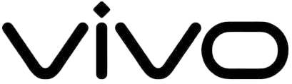
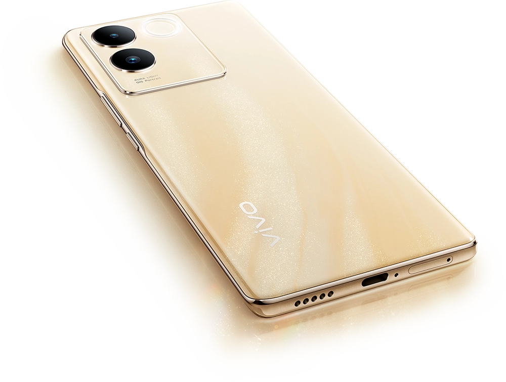
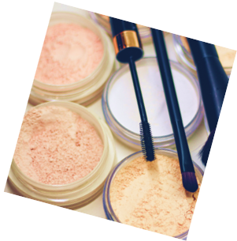
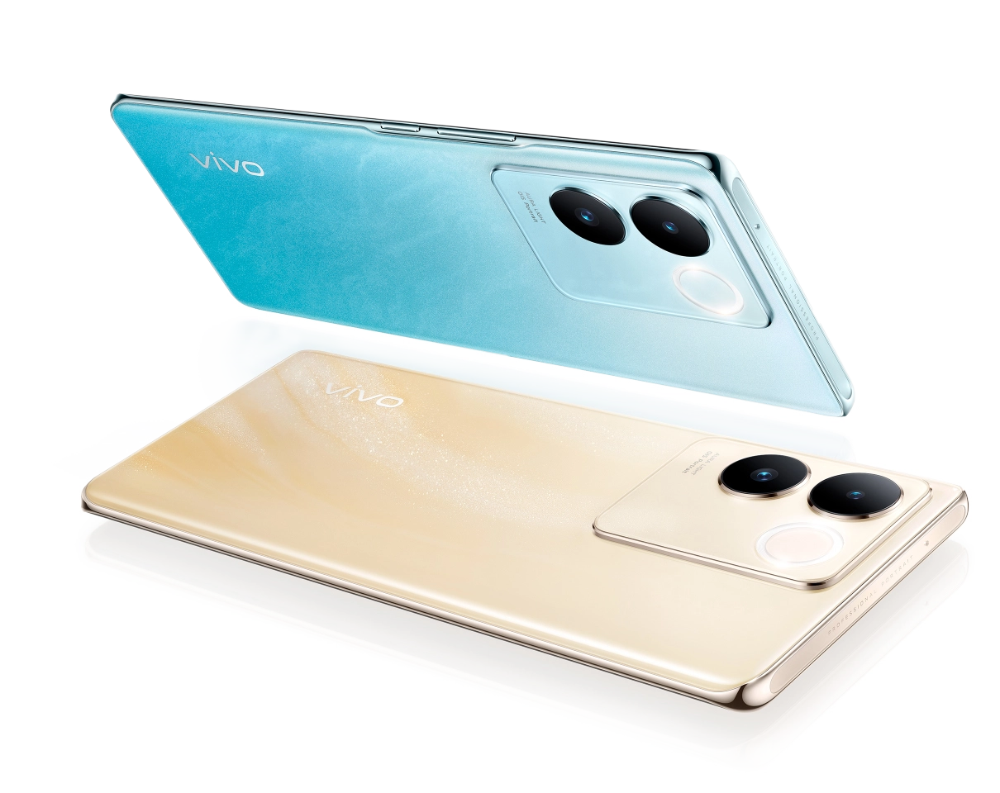
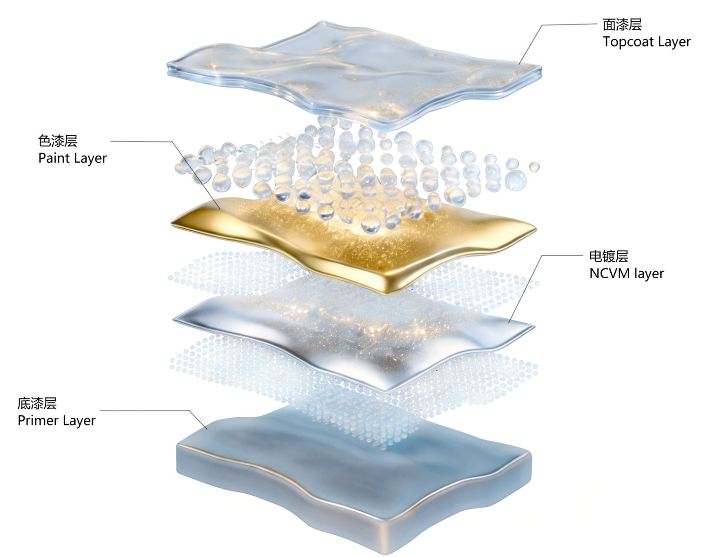
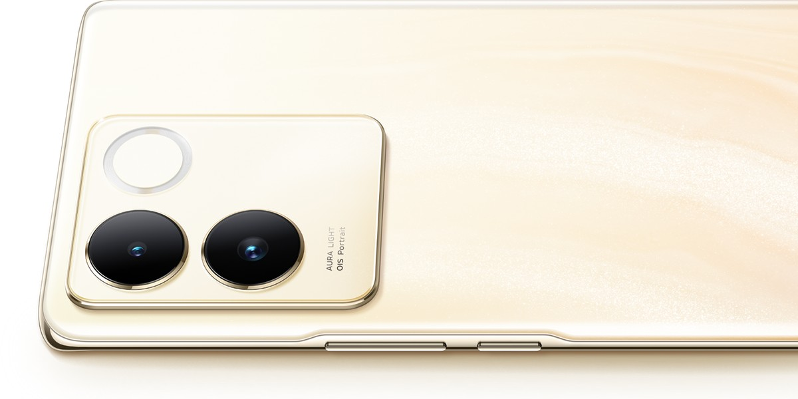
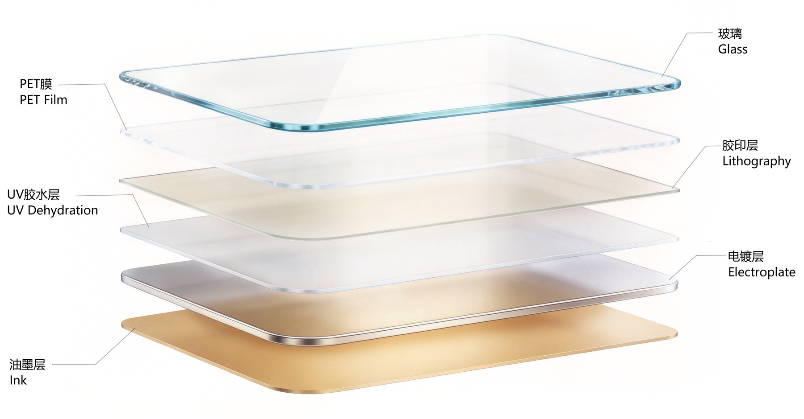
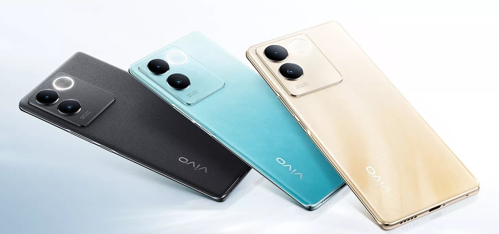

S17e
CMF design

User Research
用户画像与设计推导

USER PERSONA
16–25 岁 · 小镇青年 / 文科女大学生 · 三四线及以下城市
学生群体
颜值驱动
预算敏感
社交分享
16–25 岁年轻女性
颜值 首要驱动
拍照 核心场景
01
核心特征
- 轻薄手感好，追求舒适持握体验
- 感性主义驱动决策，重视感受与情感共鸣
- 热爱拍照记录生活，自拍与日常拍摄频率高
- 对颜值高度敏感，"好看"是第一购买驱动力
02
核心需求
- 拍照好看，自拍与夜景拍摄效果出众
- 续航持久，满足全天候使用不焦虑
- 轻薄手感好，外观颜值高，拿得出手
- 性价比优先，购机预算 1800–2500 元
CMF Design
CMF DESIGN
EVALUATE
基于目标用户的核心诉求，建立从 用户需求 → 设计特征 & 约束 → CMF 对策 的多层级映射：
01
01
用户需求
02
02
Se 系列设计特征
项目约束
用户购机预算有限（1800–2500 元），成本集中于相机与电池，预留给外观结构件的成本较少
03
03
CMF 设计对策
基于项目成本约束，通过材料替换与工艺创新实现理想的 CMF 效果：
1
3D 造型后盖 → 视觉减薄 + 提升握持手感
2
一体式嵌件注塑中框 → 减薄机身、减轻重量
3
塑胶中框 + 侧键/deco 代替铝合金 → 减重降本
4
NCVM 工艺代替金属阳极 → 保持精致度、降本降重
5
复合板材装饰片代替玻璃装饰片 → 保证外观、降低成本
6
玻璃电池盖 → 提升手机整体外观质感
COLOR STRATEGY
星夜黑
深邃经典 · 永恒之选
第一配色以基础无彩色黑色为主色调，覆盖满足大多数无外观要求及喜爱深色系男性用户外观需求，普适性强，口碑风险小
晴波蓝
清新活力 · 夏日清凉
第二配色以基础冷色系蓝色为主色调，作为中性色用户接受度高，能同时覆盖男女性用户，配合渐变效果带来清新感受并迎合 7 月份夏季上市时间
流沙金
轻盈温暖 · 精致优雅
第三配色为个性色，以暖色系浅金色为主色调，进一步覆盖女性用户，表达出 S 系列的产品调性，营造轻盈、精致的美学特征
TEXTURE STRATEGY
本机型结合手板调研与 S 系列设计语言，最终聚焦于特征纹理与意象纹理方向进行 CMF 设计。目标用户人群更偏向具象纹理带来的设计美学感知——从真实材质的肌理中提取灵感，再以抽象手法转译为机身表面语言。
具象
／
特征纹理
→
意象纹理
→
几何纹理
→
光影纹理
／
抽象
MOOD BOARD
COLOR
AND
TEXTURE
STRATEGY
03
Material evaluate
Material analysis and selection

01
PMMA-PC 复合板材
Decorative piece
此款手机定位为中低端机型，外观成本受限，为了降低成本，摄像头装饰片和顶部装饰条分别采用 0.5mm 及 0.25mm 厚度的 PMMA-PC 复合板材材料；耐刮擦、高透过率的 PMMA 为正面，高强度、易上色的 PC 作为背面。
02
高硅铝玻璃
Battery cover
手机电池后盖采用高硅铝玻璃，满足握持手感和通透效果的外观质感，并 3D 热弯成型及二次强化处理，提升玻璃强度和硬度。
05
PC+10%GF
SIM Card Tray
卡托为 PC+10% 玻璃纤维材料，搭配铝合金嵌件注塑，保证卡托的刚性，保证卡托在使用中能更好的承受外部力量，减少变形。
03
PC+20%GF
Middle Frame / Button
此款手机定位以轻薄、女性为主，整体采用曲面屏从视觉达到轻薄，采用一体式中框，取消屏幕支架，从整机厚度上减薄；为了保证整体结构强度，中框采用压铸铝合金嵌件注塑方式，并使用 PC+20% 玻璃纤维材料提升整机刚性和尺寸稳定性。
04
PC
Camera deco
摄像头 deco 件均采用 PC 材质，有良好的加工性能易注塑，强度高以及上色性优异，能满足后期各种表面处理的需求；相比铝合金 deco 件，成本更低，重量更轻，满足项目需求。
Process & Realization
surface finishing
and Implementation
01
NCVM Vacuum Plating
NCVM 彩镀工艺

中框 · 成型
中框采用常规钢模嵌件注塑成型方式，保证结构强度与尺寸稳定性。
中框 · 喷涂
采用 NCVM 彩镀喷涂工艺获得金属质感，工艺流程为四涂一镀，并采用叠喷的喷涂方式丰富层次。
deco · 喷涂
摄像头 deco 为纯 PC 材质，油漆更容易附着，工艺流程为三涂一镀，根据造型特点采用平喷方式，保证油漆均匀性。
彩镀材料
彩镀工艺均采用 UV 型固化油漆和纳米色浆，提高颜色通透度和喷涂固化效率。
NCVM 原理
NCVM（非导电真空镀膜）采用 99.99% 铟丝为镀材，镀膜方式为钨丝蒸发镀。由于铟丝的成膜特性，不会形成静电屏蔽，利用金属镀层使中框拥有高亮的金属质感，提升产品精致度，并通过高亮面漆提升表面亮度。
02
Composite Sheet
复合板材工艺
采用 0.5mm PC-PMMA 复合板材。三款配色根据效果不同，所采用的工艺类型也不同——流沙金与晴波蓝走渐变通透路线，星夜黑走光影质感路线。
0.5 mm
PC-PMMA 复合板材
SHEET THICKNESS · CAMERA DECO
A流沙金 · 晴波蓝
胶印
→
转印
→
电镀
→
丝印
背面工艺：利用高精度胶印实现渐变颜色效果，通过 UV 转印实现流沙和海浪波纹的纹理效果，并结合电镀提升整体光泽质感，让装饰片更加通透；最后利用丝印油墨颜色提升整体的颜色饱和度。
正面（流沙金）：光面效果，无工艺，采用单面加硬板材。
B星夜黑
转印
→
电镀
→
丝印
背面工艺：通过丝印油墨黑色作为基础，通过转印光影纹理的 UV 胶水层作为嫁接层，让镀膜更好附着在板材上；利用光学膜系提升反光质感，提亮黑色的质感。
正面（星夜黑 / 晴波蓝）：AG 砂面效果，采用正面转纹工艺，通过在正面 UV 转印玻璃 AG 砂面纹理实现哑面效果。
KEY PROCESSES
四道关键工艺
P1
胶版印刷工艺
Offset Printing
胶版印刷通过胶辊着墨后进行印刷，具有颜色明艳、半透的特点。在装饰片上，胶印工艺作为图形图案或渐变色，丰富外观效果；以及作为半透色提升层次，丰富镀膜颜色效果。
P2
UV 转印工艺
UV Transfer
UV 转印工艺通过辊压，将 UV 型胶水完全填充在纹理模具与复合板材之间，再通过 LED 灯、汞灯固化，将光学纹理转印至板材上的关键工艺。
P3
电镀工艺
Plating
利用电镀层赋予纹理质感和颜色，电镀膜系常为光学膜系——通过氧化铌、氧化硅和氧化钛等不同折射率的材料来形成薄膜干涉的颜色变化，通过金属膜系来提升反光质感。
P4
丝网印刷工艺
Screen Printing
丝网印刷具有成本低、效率高、性能稳定的特点，通过丝网版和刮刀将油墨印刷在板材上。在手机工艺中，丝印工艺通常作为最后一道工艺，提供颜色、保护上层工艺以及阻燃的作用。

03
Glass Lamination
玻璃贴膜工艺
STACK STRUCTURE · 叠层结构
- L1玻璃基材Glass
- L2PET 膜 + OCA 胶PET · OCA
- L3胶印颜色Lithography
- L4UV 转印纹理UV Texture
- L5电镀层Electroplate
- L6丝印油墨Screen Ink
白玻工序链 · GLASS FINISHING CHAIN
热弯
→
抛光
→
扫磨
→
清洗
→
强化
→
丝印 logo

A
白玻阶段
GLASS STAGE
白玻 · 配色
流沙金为光面效果，采用光面玻璃，整体造型为 3D 曲面造型。
白玻 · 工序
白玻阶段玻璃需要进行热弯处理，完成后依次进行抛光、扫磨、清洗、强化等工序，提升玻璃表面光洁度、强度和刚性，再丝印镜面银 logo。
哑面 · AG 蚀刻
星夜黑和晴波蓝正面配色为哑面效果，与流沙金配色不同。玻璃热弯后，表面还需要进行 AG 蚀刻处理——与板材正面转印雾面纹理不同，玻璃表面通过氢氟酸、柠檬酸、氟化铵等试剂与玻璃表面二氧化硅反应，形成晶状盐结构，形成 AG 雾面效果。
B
膜片阶段
FILM STAGE
PET 膜片
实现外观效果的主要工艺做在 PET 膜片上。流沙金和晴波蓝电池盖 PET 膜片工艺与复合板材装饰片类似——通过胶印实现上下颜色渐变和流沙图案，再通过转印电镀流沙纹和水波纹丰富效果层次，利用丝印白色油墨为整体提供底色。
星夜黑 · PET 膜片
星夜黑 PET 膜片工艺与复合板材装饰片类似：在 PET 上采用转印金属质感纹理形成光影，再将 PET 膜片通过磁控炉电镀提升黑色的反光，最后利用丝印黑色油墨提供整体的黑底色。最后撕掉膜片上的离型膜，将做完工艺的 PET 膜贴合在玻璃上。
贴合补边
当白玻和膜片工艺都完成后，最后通过贴合除泡工艺将膜片贴合在玻璃上，贴合完成后进行喷涂补边处理，完善玻璃边缘效果。
Finale · Color Finishes
星夜黑·晴波蓝·流沙金
